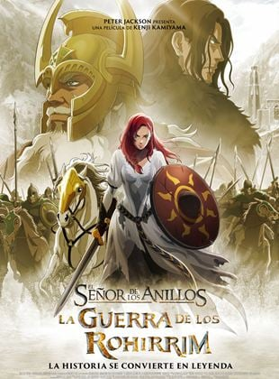
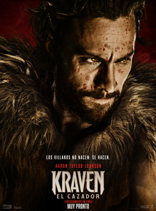
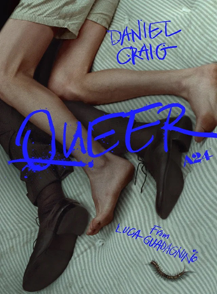
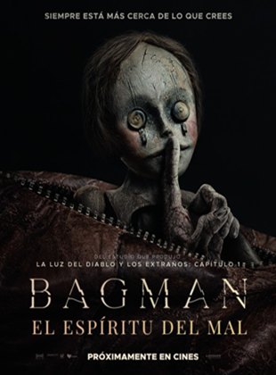
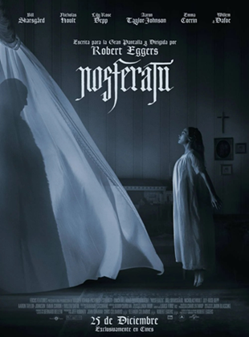
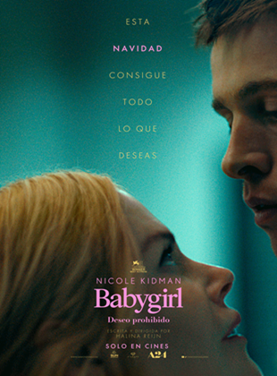
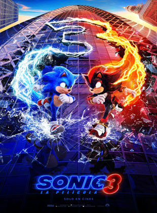

El señor de los anillos: La guerra de los Rohirrim
05 DE DICIEMBRE DE 2024

Ambientada 183 años antes de los acontecimientos narrados en la trilogía original de películas, “El Señor de los Anillos: La Guerra de los Rohirrim” cuenta el destino de la Casa de Helm Hammerhand, el legendario Rey de Rohan. Un ataque repentino de Wulf, un inteligente y despiadado señor Dunlending que busca venganza por la muerte de su padre, obliga a Helm y su gente a realizar una última y audaz resistencia en la antigua fortaleza de Hornburg, una poderosa fortaleza que más tarde llegaría a ser conocida. como el Abismo de Helm. Al encontrarse en una situación cada vez más desesperada, Hera, la hija de Helm, debe reunir la voluntad para liderar la resistencia contra un enemigo mortal que intenta su destrucción total.
Kraven, el cazador
12 DE DICIEMBRE DE 2024

Kraven El Cazador es la historia, llena de acción, de cómo y por qué surgió uno de los villanos más icónicos de Marvel. Aaron Taylor-Johnson interpreta a Kraven, un hombre cuya compleja relación con su despiadado padre, Nikolai Kravinoff (Russell Crowe), le hace emprender un camino de venganza con brutales consecuencias, motivándole a convertirse no solo en el mayor cazador del mundo, sino también en uno de los más temidos.
Queer
12 DE DICIEMBRE DE 2024

William Lee, un expatriado estadounidense adicto a la heroína en Ciudad de México, pasa sus días casi completamente solo, salvo por algunos contactos con otros miembros de la pequeña comunidad estadounidense. Su encuentro con Eugene Allerton, un exsoldado también expatriado, le hace creer que finalmente podría ser posible establecer una conexión íntima con alguien.
Mufasa
19 DE DICIEMBRE DE 2024

Precuela de la película de 2019 de acción real 'El Rey León'. Rafiki es el encargado de transmitir la leyenda de Mufasa a la joven cachorra de león Kiara, hija de Simba y Nala, con Timón y Pumba aportando sus característicos trucos. Narrada con flashbacks, la historia presenta a Mufasa como un cachorro huérfano, perdido y solo hasta que conoce a un simpático león llamado Taka, heredero de un linaje real. Este encuentro fortuito pone en marcha el largo viaje de un extraordinario grupo de excluidos en busca de su destino. Sus lazos se pondrán a prueba mientras trabajan juntos para eludir a un enemigo amenazante y mortal.
Bagman: El espíritu del mal
26 DE DICIEMBRE DE 2024

Durante siglos, los padres han advertido a sus hijos sobre el temible Hombre del Saco, un ser maligno que rapta a niños inocentes y los aparta para siempre de sus familias. Patrick (Sam Claflin) escapó de sus garras por los pelos en su infancia, pero el trauma que le generó aquel encuentro le ha perseguido desde entonces. Tras mudarse a su antigua casa familiar con su esposa e hijo, Patrick descubrirá que la tenebrosa criatura continúa allí, acechando sus pesadillas y amenazando con arrebatarle aquello que más quiere en el mundo.
Nosferatu
02 DE ENERO DE 2025

NOSFERATU, de Robert Eggers, es la gótica historia de una obsesión entre una joven atormentada y un terrorífico vampiro enamorado de ella, causando un horror indescriptible a su paso.
Babygirl, deseo prohibido
02 DE ENERO DE 2025

Romy (Nicole Kidman) es una exitosa directiva que inicia un romance secreto con su joven becario a espaldas de su marido (Antonio Banderas). Deberá enfrentarse a los prejuicios y al riesgo de perder su puesto.
Sonic 3: La película
02 DE ENERO DE 2025

Sonic regresa a la pantalla grande esta temporada navideña en su aventura más emocionante hasta el momento. Sonic, Knuckles y Tails se reunirán para enfrentarse a un nuevo y poderoso adversario, Shadow, un misterioso villano con poderes nunca antes vistos. Con sus habilidades rebasadas en todos los sentidos, el Equipo Sonic deberá buscar una alianza improbable con la esperanza de detener a Shadow y proteger el planeta.